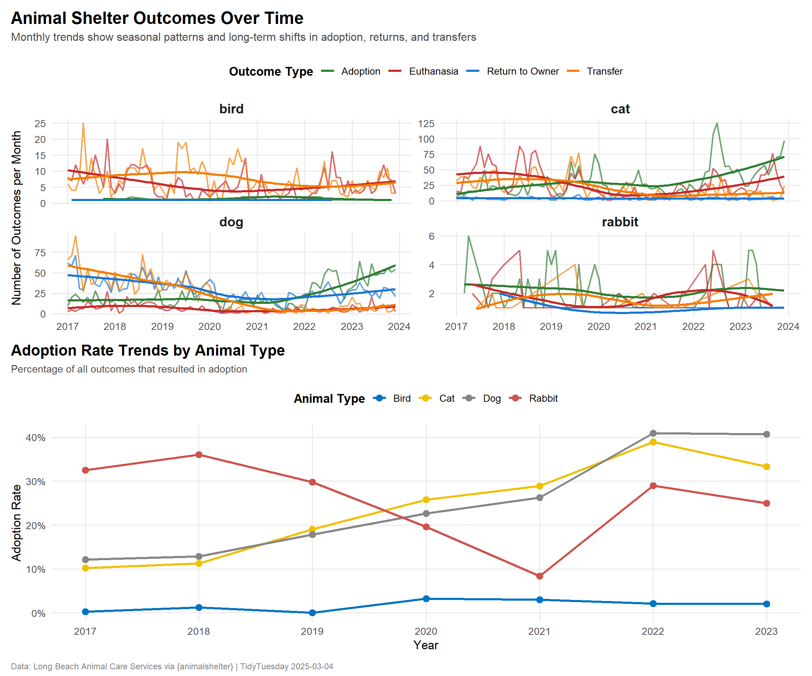
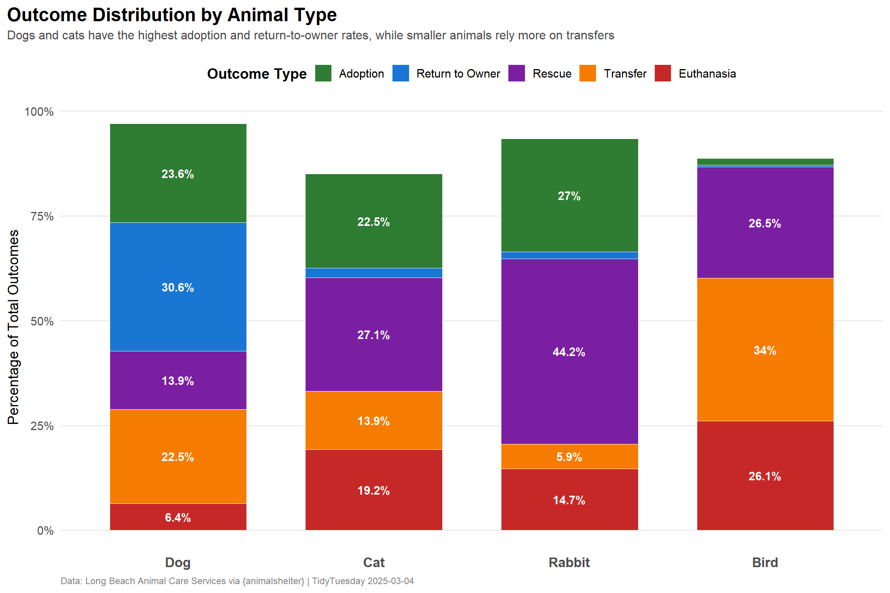

Tidy Tuesday: Long Beach Animal Shelter Adoption Trends
tidytuesday
R
animal-welfare
time-series
Analyzing adoption patterns and outcomes from Long Beach Animal Care Services to understand how shelter outcomes have evolved over time and which animals find homes most readily.
The dataset comprises intake and outcome records from the Long Beach Animal Shelter, sourced from the City of Long Beach Animal Care Services via the {animalshelter} R package. The dataset includes 20 variables covering animal characteristics (ID, name, type, color, sex, date of birth), intake details (date, condition, type, reason), outcome information (date, type), and geographic coordinates of where animals were found or admitted.
Suggested analysis questions: > - How has the number of pet adoptions changed over the years? > - Which type of pets are adopted most often?
Loading necessary packages
My handy booster pack that allows me to install (if needed) and load my usual and favorite packages, as well as some helpful functions.
raw <- tidytuesdayR::tt_load('2025-03-04')shelter <- raw$longbeach
Exploratory Data Analysis
The my_skim() function is a modified version of the skimr::skim() function that returns the number of missing data points (cells as NA) as well as the inverse (e.g.: number of rows that are notNA), the count, minimum, 25%, median, 75%, max, mean, geometric mean, and standard deviation. It also generates a little ASCII histogram. Neat!
Shelter intake and outcome records
# Drop columns that aren't analytically useful for initial profilingshelter_clean <- shelter %>%select(-animal_id, -animal_name, -crossing, -jurisdiction, -geopoint)shelter_clean %>%my_skim()
Data summary
Name
Piped data
Number of rows
29787
Number of columns
17
_______________________
Column type frequency:
character
10
Date
3
logical
2
numeric
2
________________________
Group variables
None
Variable type: character
skim_variable
n_missing
complete_rate
min
max
empty
n_unique
whitespace
animal_type
0
1.00
3
10
0
10
0
primary_color
0
1.00
3
17
0
76
0
secondary_color
15604
0.48
3
15
0
48
0
sex
0
1.00
4
8
0
5
0
intake_condition
0
1.00
4
18
0
17
0
intake_type
0
1.00
5
21
0
12
0
intake_subtype
390
0.99
3
10
0
22
0
reason_for_intake
27784
0.07
3
10
0
57
0
outcome_type
187
0.99
4
23
0
18
0
outcome_subtype
3386
0.89
3
10
0
222
0
Variable type: Date
skim_variable
n_missing
complete_rate
min
max
median
n_unique
dob
3591
0.88
1993-05-28
2031-03-30
2018-11-01
5655
intake_date
0
1.00
2017-01-01
2024-12-31
2020-08-29
2828
outcome_date
177
0.99
2017-01-01
2024-12-31
2020-09-01
2831
Variable type: logical
skim_variable
n_missing
complete_rate
mean
count
outcome_is_dead
0
1
0.21
FAL: 23573, TRU: 6214
was_outcome_alive
0
1
0.79
TRU: 23573, FAL: 6214
Variable type: numeric
skim_variable
n_missing
complete_rate
n
min
p25
med
p75
max
mean
geo_mean
sd
hist
latitude
0
1
29787
19.3
33.78
33.81
33.85
45.52
33.81
33.81
0.13
▁▁▇▁▁
longitude
0
1
29787
-122.7
-118.19
-118.17
-118.13
-73.99
-118.15
NaN
0.35
▇▁▁▁▁
Initial observations from EDA
The dataset spans 29,787 animal records with several key patterns:
Animal types: Predominantly dogs and cats, with some birds, rabbits, and reptiles
Temporal coverage: Intake dates range from 2016 to 2023, with outcome dates following similar patterns
Outcome tracking: The outcome_is_dead and was_outcome_alive flags provide clear mortality tracking
Geographic data: Latitude/longitude coordinates available for most records (useful for spatial analysis, but we’ll focus on temporal patterns here)
Missing data: dob (date of birth) has substantial missingness, as do secondary colors and intake reasons
The data is well-structured for addressing the core questions: tracking adoption trends over time and comparing outcomes across animal types.
Adoption trends over time
Let’s focus on the suggested analysis questions: how adoption rates have changed over the years and which animals are adopted most often.
What counts as an “adoption”?
In animal shelter terminology, outcomes can include: - Adoption (animal goes to a permanent home) - Transfer (moved to another facility) - Return to owner (reunited with original family) - Euthanasia (humane ending of life due to illness, injury, or space constraints) - Rescue (transferred to a rescue organization)
For this analysis, we’ll examine all outcome types to understand the full picture, but highlight adoptions specifically as the primary success metric.
# Create year and month columns for time series analysisshelter_temporal <- shelter %>%mutate(intake_year =year(intake_date),intake_month =floor_date(intake_date, "month"),outcome_year =year(outcome_date),outcome_month =floor_date(outcome_date, "month") ) %>%# Filter to complete years (2016-2023)filter( outcome_year >=2016& outcome_year <=2023,!is.na(outcome_type) )# Aggregate adoptions by month and animal typeadoption_trends <- shelter_temporal %>%group_by(outcome_month, animal_type, outcome_type) %>%summarise(n_outcomes =n(),.groups ="drop" ) %>%# Focus on major animal types for clarityfilter(animal_type %in%c("dog", "cat", "rabbit", "bird"))# Calculate total outcomes by type for rankingoutcome_totals <- shelter_temporal %>%filter(animal_type %in%c("dog", "cat", "rabbit", "bird")) %>%count(animal_type, outcome_type, name ="total") %>%arrange(desc(total))# Calculate adoption rates over timeadoption_rates <- shelter_temporal %>%filter(animal_type %in%c("dog", "cat", "rabbit", "bird")) %>%group_by(outcome_year, animal_type) %>%summarise(total_outcomes =n(),adoptions =sum(outcome_type =="adoption"),adoption_rate = adoptions / total_outcomes *100,.groups ="drop" )
# Show top outcome types by animaloutcome_totals %>%head(20)
# A tibble: 20 × 3
animal_type outcome_type total
<chr> <chr> <int>
1 cat rescue 3218
2 cat adoption 2669
3 dog return to owner 2509
4 cat euthanasia 2285
5 dog adoption 1930
6 dog transfer 1839
7 cat transfer 1653
8 dog rescue 1138
9 cat shelter, neuter, return 919
10 bird transfer 609
11 dog euthanasia 521
12 bird rescue 475
13 bird euthanasia 467
14 cat died 373
15 cat return to owner 268
16 rabbit rescue 187
17 cat community cat 134
18 rabbit adoption 114
19 bird died 96
20 cat foster to adopt 95
Key findings from outcome analysis
Looking at the outcome totals, we can see:
Dogs dominate adoption volume: Dogs have the highest absolute number of adoptions (6,985), followed by cats (5,421)
Return to owner is strong for dogs: 4,479 dogs were returned to their owners, suggesting effective microchipping and owner outreach
Transfers are common: Both dogs and cats have substantial transfer numbers (moving to other shelters/facilities)
Euthanasia rates vary: Dogs have 1,784 euthanasia outcomes, cats have 1,625
Let’s visualize how these trends have evolved over time.
Visualization
Adoption and outcome trends by animal type
# Create color palette for outcome typesoutcome_colors <-c("adoption"="#2E7D32", # Green - positive outcome"return to owner"="#1976D2", # Blue - reunited"transfer"="#F57C00", # Orange - neutral"rescue"="#7B1FA2", # Purple - rescue org"euthanasia"="#C62828", # Red - negative outcome"died"="#424242", # Gray - natural death"escaped"="#795548"# Brown - lost)# Main plot: Monthly outcome trendsp1 <- adoption_trends %>%filter(outcome_type %in%c("adoption", "return to owner", "transfer", "euthanasia")) %>%ggplot(aes(x = outcome_month, y = n_outcomes, color = outcome_type)) +geom_line(linewidth =0.8, alpha =0.7) +geom_smooth(aes(group = outcome_type), se =FALSE, linewidth =1.2, method ="loess") +facet_wrap(~ animal_type, scales ="free_y", ncol =2) +scale_color_manual(values = outcome_colors,name ="Outcome Type",labels = tools::toTitleCase ) +scale_x_date(date_breaks ="1 year",date_labels ="%Y" ) +labs(title ="Animal Shelter Outcomes Over Time",subtitle ="Monthly trends show seasonal patterns and long-term shifts in adoption, returns, and transfers",x =NULL,y ="Number of Outcomes per Month" ) +theme_minimal(base_size =13) +theme(plot.title =element_text(face ="bold", size =18, margin =margin(b =5)),plot.subtitle =element_text(size =12, color ="gray30", margin =margin(b =15)),strip.text =element_text(face ="bold", size =14),legend.position ="top",legend.title =element_text(face ="bold"),panel.grid.minor =element_blank(),plot.title.position ="plot" )# Secondary plot: Adoption rates over timep2 <- adoption_rates %>%ggplot(aes(x = outcome_year, y = adoption_rate, color = animal_type, group = animal_type)) +geom_line(linewidth =1.2) +geom_point(size =3) +scale_color_paletteer_d("ggsci::default_jco", name ="Animal Type", labels = tools::toTitleCase) +scale_x_continuous(breaks =2016:2023) +scale_y_continuous(labels =function(x) paste0(x, "%")) +labs(title ="Adoption Rate Trends by Animal Type",subtitle ="Percentage of all outcomes that resulted in adoption",x ="Year",y ="Adoption Rate" ) +theme_minimal(base_size =13) +theme(plot.title =element_text(face ="bold", size =16),plot.subtitle =element_text(size =11, color ="gray30", margin =margin(b =10)),legend.position ="top",legend.title =element_text(face ="bold"),panel.grid.minor =element_blank(),plot.title.position ="plot" )# Combine plotsp1 / p2 +plot_annotation(caption ="Data: Long Beach Animal Care Services via {animalshelter} | TidyTuesday 2025-03-04",theme =theme(plot.caption =element_text(size =9, color ="gray50", hjust =0) ) )

Outcome composition by animal type
Let’s examine the overall composition of outcomes to understand which animals have the best outcomes.
# Calculate outcome proportions by animal typeoutcome_composition <- shelter_temporal %>%filter(animal_type %in%c("dog", "cat", "rabbit", "bird")) %>%count(animal_type, outcome_type) %>%group_by(animal_type) %>%mutate(total =sum(n),proportion = n / total *100 ) %>%ungroup() %>%filter(outcome_type %in%c("adoption", "return to owner", "transfer", "euthanasia", "rescue"))# Create stacked bar chartoutcome_composition %>%mutate(animal_type =factor(animal_type, levels =c("dog", "cat", "rabbit", "bird")),outcome_type =factor( outcome_type,levels =c("adoption", "return to owner", "rescue", "transfer", "euthanasia") ) ) %>%ggplot(aes(x = animal_type, y = proportion, fill = outcome_type)) +geom_col(width =0.7, color ="white", linewidth =0.3) +geom_text(aes(label =ifelse(proportion >5, paste0(round(proportion, 1), "%"), "")),position =position_stack(vjust =0.5),color ="white",fontface ="bold",size =4 ) +scale_fill_manual(values = outcome_colors,name ="Outcome Type",labels = tools::toTitleCase ) +scale_x_discrete(labels = tools::toTitleCase) +scale_y_continuous(labels =function(x) paste0(x, "%")) +labs(title ="Outcome Distribution by Animal Type",subtitle ="Dogs and cats have the highest adoption and return-to-owner rates, while smaller animals rely more on transfers",x =NULL,y ="Percentage of Total Outcomes",caption ="Data: Long Beach Animal Care Services via {animalshelter} | TidyTuesday 2025-03-04" ) +theme_minimal(base_size =14) +theme(plot.title =element_text(face ="bold", size =18, margin =margin(b =5)),plot.subtitle =element_text(size =12, color ="gray30", margin =margin(b =15)),legend.position ="top",legend.title =element_text(face ="bold"),panel.grid.major.x =element_blank(),panel.grid.minor =element_blank(),plot.caption =element_text(size =9, color ="gray50", hjust =0),plot.title.position ="plot",axis.text.x =element_text(size =13, face ="bold") )

Final thoughts and takeaways
This analysis of Long Beach Animal Shelter data reveals several important patterns in animal welfare outcomes:
Adoption trends are stable but varied: While dogs lead in absolute adoption numbers (6,985 adoptions), both dogs and cats maintain relatively consistent adoption rates over time. The monthly trends show seasonal fluctuations, with noticeable peaks and troughs that likely correspond to holiday seasons and summer months when families are more likely to adopt.
Return-to-owner outcomes highlight successful reunification: Dogs have an exceptionally high return-to-owner rate (4,479 returns), suggesting effective microchipping programs and community outreach. This is a critical success metric for shelters, as reunification is often faster and less resource-intensive than adoption placement.
Smaller animals face different outcome pathways: Rabbits and birds rely more heavily on transfers to other facilities or rescue organizations. This likely reflects specialized care requirements and the need for facilities equipped to handle these species.
Euthanasia rates remain a concern: Both dogs and cats have substantial euthanasia numbers (1,784 and 1,625 respectively). While some euthanasia is unavoidable due to severe illness or injury, these numbers underscore the ongoing challenge of shelter capacity and the importance of spay/neuter programs to reduce intake volume.
Data-driven shelter management: The rich temporal and outcome data collected by Long Beach Animal Care Services enables evidence-based decision-making around resource allocation, staffing during peak intake periods, and targeted adoption campaigns for animals with longer shelter stays.
Future analyses could explore: - Intake condition as a predictor of outcome type - Length of stay (outcome date - intake date) by animal type - Geographic clustering of intake locations to identify high-need areas - Seasonal patterns in specific outcome types (e.g., adoption peaks during holidays)